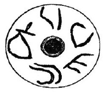

-
TROZg1
Names
TROZg1, TRO Zg 1
Support
Stone object
Location
Troy
Findspot
Unavailable

Scribe
Unavailable
Context
Unavailable
Dimensions
Catalogue
Readings
1 1 0 PI none
1 1 0 MI none
1 1 0 TA none
1 1 0 TI none
1 1 0 RA₂ none
𐘢𐘻𐘳𐘠𐘽
PIMITATIRA₂
𐘢𐘻𐘳𐘠𐘽
PIMITATIRA₂
TRO Zg 1
, spindle whorl (Berlin Museum; Godart 1994, 714-17,
fig. 5 on p. 722; Brown 1997)
PI
-
MI
-
TA
-
TI
-
RA
2
Commentary © John Younger
References